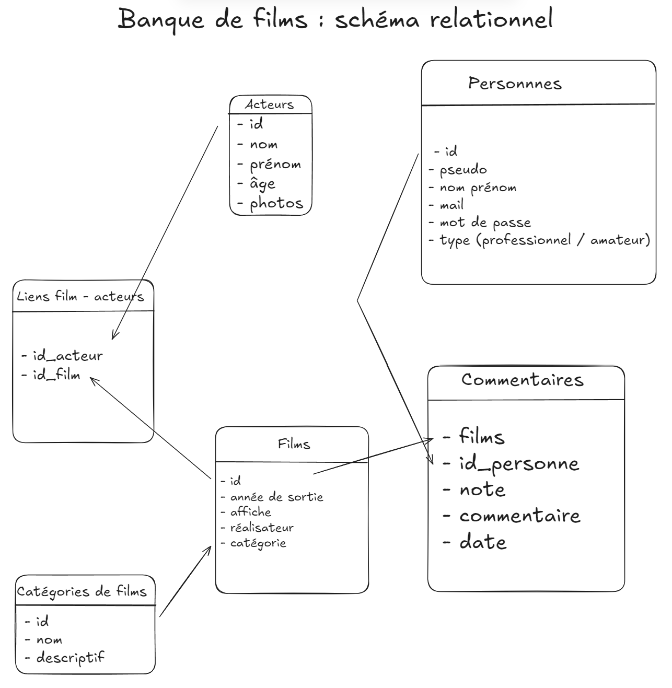
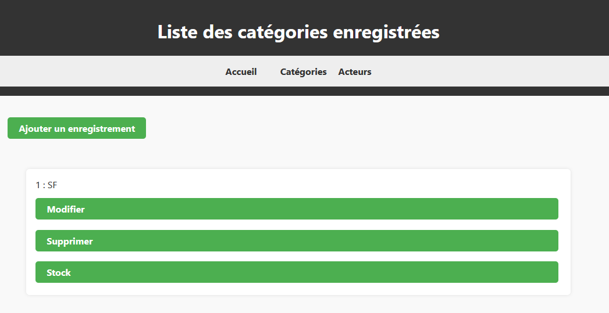
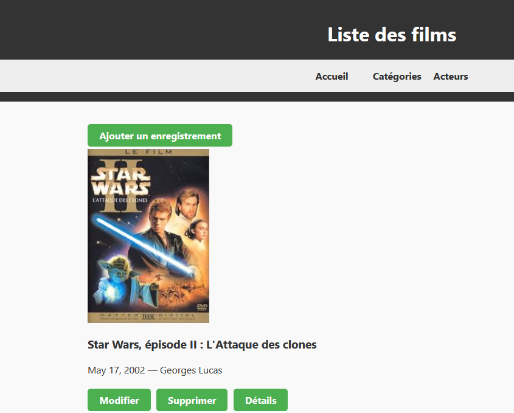

Résumé de la SAESAE Summary
Objectif :Objective: Le but de ce projet était de mettre en place un site web dynamique (dans mon cas, une banque de films) s'appuyant sur une base de données SQL. Pour le développement du site web, j'ai pu utiliser le principe The goal of this project was to set up a dynamic website (in my case, a movie database) relying on a SQL database. For the website development, I used the CRUD (Create Read Update Delete) avec le framework (Create Read Update Delete) principle with the Django pour Python. framework for Python.
Compétences acquises :Acquired skills: Développement de sites web, utilisation de Django, modélisation et utilisation de requêtes SQL, et mise en place de machines virtuelles pour le déploiement. Website development, use of Django, modeling and use of SQL queries, and setting up virtual machines for deployment.
Consulter le code source sur GitHub View source code on GitHubEnvironnement et OutilsEnvironment and Tools
Python
Langage de programmation principal utilisé pour la logique métier et le backend du projet.Main programming language used for business logic and the project's backend.
Django
Framework Web Python haut niveau permettant un développement rapide et respectant l'architecture MVT (Model-View-Template).High-level Python Web framework allowing rapid development and respecting the MVT (Model-View-Template) architecture.
VirtualBox
Outil de virtualisation utilisé pour créer des machines virtuelles (VM Linux) afin de déployer et héberger le serveur web.Virtualization tool used to create virtual machines (Linux VMs) to deploy and host the web server.
MariaDB
Système de gestion de base de données relationnelle (SGBDR) utilisé pour le stockage des tables de l'application sur le projet final.Relational Database Management System (RDBMS) used for storing application tables in the final project.
Modélisation de la Base de DonnéesDatabase Modeling
Avant de débuter l'implémentation sous Django, la première étape consistait à modéliser la structure des données via un schéma relationnel, correspondant aux besoins d'une banque de films (référencement des films, catégories, acteurs, et gestion des commentaires par des utilisateurs). L'application repose au final sur une base de données MariaDB.Before starting the implementation in Django, the first step was to model the data structure via a relational schema, corresponding to the needs of a movie database (referencing movies, categories, actors, and user comments management). The application ultimately relies on a MariaDB database.

Interface Utilisateur et FormulairesUser Interface and Forms
L'interface du site a été pensée pour permettre aux utilisateurs d'interagir avec la base de données de films. Le site intègre de multiples formulaires offrant la possibilité d'ajouter des catégories, des films, des utilisateurs, des acteurs, et bien sûr des commentaires.The site interface was designed to allow users to interact with the movie database. The site integrates multiple forms offering the ability to add categories, movies, users, actors, and of course comments.


Organisation des Templates (Architecture MVT)Template Organization (MVT Architecture)
Pour respecter l'architecture To respect Django's Model-View-Template de Django, j'ai organisé le projet autour de modèles HTML réutilisables. Le dossier architecture, I organized the project around reusable HTML templates. The templates contient 5 sous-dossiers correspondant aux entités, chacun implémentant les opérations folder contains 5 subfolders corresponding to the entities, each implementing CRUD. operations.
index.html
Fichier racine servant de squelette principal à l'application.Root file serving as the main skeleton for the application.
- Page d'accueil du projet.Project home page.
- Contient le menu de navigation commun à toutes les pages.Contains the navigation menu common to all pages.
- Contient un lien d'accès vers la page de liste des films.Contains an access link to the movie list page.
- Sert de Serves as a template parentparent template (via les balises de bloc Django) pour les autres vues. (via Django block tags) for the other views.
affiche.html
Permet d'afficher les informations détaillées d'une entité spécifique (ex: détails d'un film). Displays detailed information of a specific entity (e.g., movie details). (Non nécessaire pour toutes les entités).(Not necessary for all entities).
ajout.html
Contient le formulaire permettant la Contains the form allowing the Création (Create)Creation (Create) d'une nouvelle entité. Nécessaire pour tous les CRUD. of a new entity. Necessary for all CRUDs.
modifier.html
Permet de Allows Mettre à jour (Update)Updating (Update) les informations d'une entité existante. Est basé sur la structure du formulaire d'ajout. the information of an existing entity. Based on the add form structure.
supprimer.html
Vue de confirmation permettant la Confirmation view allowing the Suppression (Delete)Deletion (Delete) d'une entité. Nécessaire pour tous les CRUD. of an entity. Necessary for all CRUDs.
afficher_all.html
Permet de Allows Lire (Read)Reading (Read) l'ensemble des entités d'une table. all entities of a table.
Peut utiliser un identifiant (Can use an identifier (id) pour filtrer l'affichage (ex: tous les films d'un genre, tous les commentaires d'un film...).) to filter the display (e.g., all movies of a genre, all comments of a movie...).
Gestion de projet & DéploiementProject Management & Deployment
Planification avec GanttPlanning with Gantt
La réalisation du projet a débuté par une phase de structuration et de répartition des tâches, matérialisée par la The realization of the project began with a phase of structuring and task distribution, materialized by the réalisation d'un diagramme de Ganttcreation of a Gantt chart. Nous avions plusieurs séances d'études et devions nous séparer le travail, c'est pourquoi cette méthode de planification s'est avérée particulièrement utile pour suivre l'avancement.. We had several study sessions and had to divide the work, which is why this planning method proved particularly useful for tracking progress.
Gestion des UtilisateursUser Management
Une méthode basique de gestion (sans sécurité avancée) a été implémentée : à chaque fois qu'un utilisateur souhaite ajouter, modifier ou supprimer un commentaire, il a le choix entre créer son compte ou se connecter, puis accède au formulaire de commentaire.A basic management method (without advanced security) was implemented: whenever a user wants to add, modify or delete a comment, they have the choice between creating their account or logging in, then accessing the comment form.
Déploiement en Machines VirtuellesDeployment in Virtual Machines
Au-delà du développement local, le projet nécessitait la Beyond local development, the project required mise en place de machines virtuelles (VM Linux)setting up virtual machines (Linux VMs). L'architecture déployée sépare les services : un serveur Apache hébergeant le serveur Web (lié à Nginx et Gunicorn pour Django) et un serveur MariaDB pour héberger la base de données.. The deployed architecture separates the services: an Apache server hosting the Web server (linked to Nginx and Gunicorn for Django) and a MariaDB server to host the database.
Apprentissages Critiques ciblésTargeted Critical Learnings
- AC13.01 Utiliser un système informatique et ses outils (déploiement de machines virtuelles). Use an IT system and its tools (deployment of virtual machines).
- AC13.02 Lire, exécuter, corriger et modifier un programme Python/Django. Read, execute, debug, and modify a Python/Django program.
- AC13.04 Connaître l'architecture et les technologies d'un site Web (HTML, CSS, requêtes HTTP, architecture MVT). Understand the architecture and technologies of a website (HTML, CSS, HTTP requests, MVT architecture).
- AC13.05 Choisir les mécanismes de gestion de données adaptés (Base de données SQL relationnelle et requêtes ORM Django). Choose appropriate data management mechanisms (Relational SQL database and Django ORM queries).
- AC13.06 S'intégrer dans un environnement propice au développement (suivi via Diagramme de Gantt et versionning). Integrate into an environment conducive to development (tracking via Gantt chart and versioning).
Analyse réflexive et DifficultésReflective Analysis and Difficulties
J'ai trouvé cette SAE particulièrement intéressante car elle nous fait utiliser des techniques, allant de la gestion de projet jusqu'à la mise en production.I found this SAE particularly interesting because it makes us use techniques ranging from project management to production deployment.
Cependant, nous avons fait face à plusieurs difficultés qui ont impacté le projet :However, we faced several difficulties that impacted the project:
- Retard organisationnel :Organizational delay: Des difficultés imprévues ont entraîné un décalage par rapport à la planification initiale établie dans le diagramme de Gantt. Unforeseen difficulties led to a shift from the initial planning established in the Gantt chart.
- Gestion des médias :Media management: La gestion des images avec Django (nécessitant la modification de Image management with Django (requiring modification of
settings.pyet andurls.py) s'est avérée complexe et n'a finalement pas fonctionné pour l'affichage des photos des acteurs.) proved complex and ultimately did not work for displaying actor photos. - Problèmes d'implémentation et de déploiement :Implementation and deployment issues: Après le déploiement de l'application sur les machines virtuelles, certains liens internes ne fonctionnaient plus, nécessitant des corrections de dernière minute. After deploying the application on virtual machines, some internal links no longer worked, requiring last-minute corrections.